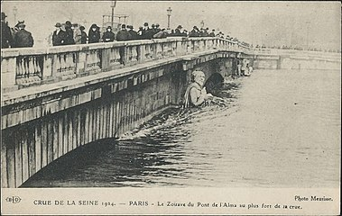
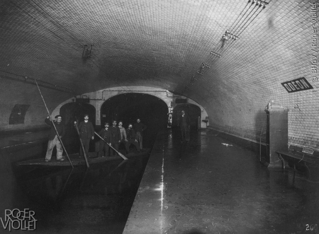
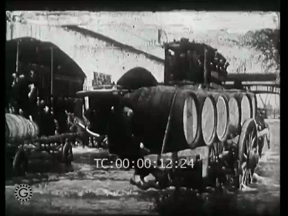
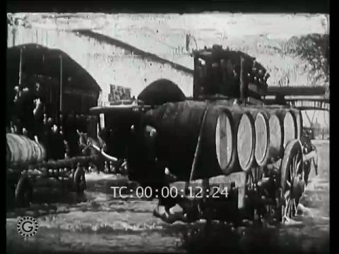
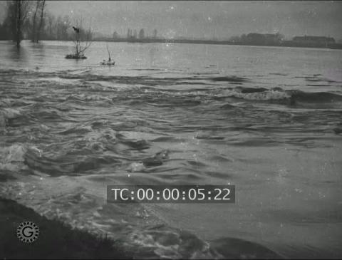
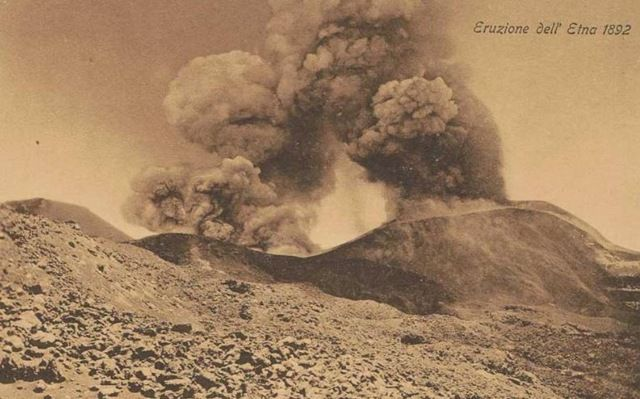
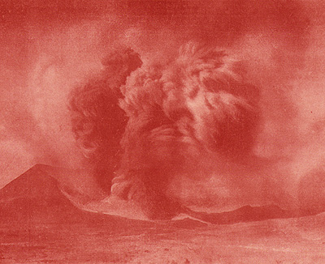

The disaster film
|  |
|---|
In January 1910, « la crue de la Seine » led to the worst floods that Paris and the surrounding region had known
since 1658, reaching its highpoint on the 28th of the month. George Diebolt's statue of the Zouave by the pont de l'Alma, a traditional measure
of the height of a « crue » was submerged up to his shoulders. Stations were flooded and public transport unusable.
|  |
|---|
The députés had to make their way to the Assemblée by boat. On 20 January navigation of the river had to be stopped because of blockages under the bridges. On 21 January the machines at the Société Urbaine d'Air Comprimé in the XIIe arrondissement ceased to work, which stopped all public clocks and lifts in the city. There were cases of typhus and scarlatina and the damage caused by the flooding was extensive and costly. 20,000 blocks of flats in the capital itself were flooded and 30, 000 houses in the region around Paris. A vinegar factory at Ivry-sur-Seine, Pagès Camus, exploded and was totally destroyed in the resulting conflagration.
Both Pathé and Gaumont filmed the floods, but, to judge from the surviving material, Gaumont typically made the more thorough job. Films were often relatively long; Pathé's Les Inondations de Paris ran some fifteen minutes.
 |
|---|
 
 |
|---|
Gaumont continued to interest itself rather later (there was further flooding in November). Pathé too had produced an eight-minute film, Après les inondations, le désastre in February.
|
|
|---|
If there is such a thing as "inondomania", Gaumont would seem by this time to have been affected by it. THe operators took to photographing floods all over France, in Nancy (also November), Nantes (in December) and the Touraine (also December). In November too they were filming floods (or their results) as far afield as Italy. There seem, however, to have been no films of the severe flooding that also took place during the year in Alsace (then still part of Germany).
|
 |
|---|
It has to be said, whatever the damage, cost and inconenience caused, Paris has rarely looked so beautiful as it did during the floods. Photographers too had a field day.
As for the films, this is a compilation but includes some footage that is clearly from the Gaumont films.
This video, a piece of propaganda dedicated to a militant royalist organisation active at the period known as « Les Camelots du roi (La Fédération nationale des Camelots du roi) associated with the right-wing Action franèaise, also has some interesting footage of the floods. The organisation's founder, Maurice Pujo, was among those involved in duels the following year after violent anti-semitic attacks on the playwright Henri Bernstein. They were, on the other hand, in a vague alliance with the left at this period and social action in favour of the « sinistrés » of the floods was not untypical of the organisation's less ugly aspects.
Grotesquely, Henri Desfontaines produced a comedy/trick film in July 1910, Le Mouchoir enchanté, for Gaumont the same year in which a group of people are obliged to protect themselves from « inondations de morve ». I shall refrain from translating that but the CNC description of the film makes the situation clear enough:
Lors d'une soirée, un bourgeois est pris d'une crise d'éternuement. Il sort son mouchoir, mais ce dernier prend la taille d'une nappe, qu'il est bien difficile de faire rentrer dans la poche du pantalon. Soudain, le nez du protagoniste se met à couler à un débit de robinet grand ouvert. Ne pouvant maîtriser seul la situation, les convives décident de l'aider en lui sortant le mouchoir qui n'a plus de fin, au point d'être obligé d'évacuer le tissu par la fenêtre. Une heure après, tout le monde s'est assis en hauteur pour se protéger de l'inondation.
During the course of a party, a bourgeois is seized by a fit of sneezing. He takes out his handkerchief, but it assumes the size of a tablecloth, which is very difficult for him to get back in his pocket. Suddnely the man's nose starts to run like a fully open tap. Since he is unabble to control the situation himself, the guests decide to help hiim by getting the handkerchief away from him but thre is no end to it, at shich oint they are obliged to throw it out the window. An hour later, everyone is perched up high to protect themselves from the flood.
The dykes, it seems, were breaking everywhere!
A more spectacular disaster was the eruption of the Volcano Etna in Sicily that took place on On 23rd March 1910 when a large fissure formed, which extended for two kilometres. Over twenty craters formed over the next few days, which, as the Pathé-Baby catalogue has it, "vomited" lava and together with clouds of steam and ash. On 24th March, lava from the highest point of the fissure erupted, forming a river 1,500 feet wide, which flowed at the rate of sixty or more feet per hour for a distance of two kilometres. Later lava flowed mostly from the lower craters (about 7,000 feet altitude) and formed a river of molten rock one hundred and fifty feet wide. The lava flowed southward until it reached the eastern side of Monte Faggi, two kilometers below, and formed a magnificent cascade thirty-five feet wide and seventy high. By the 31st March the lava flows had destroyed many gardens, vineyards, and woodlands near the affected villages. The town of Cavaliere was covered with ash and the fertile region of Cisterna Regina was destroyed. The eruption lasted in all twenty-nine days.
|   |
|---|
Since 1470 BC (approximate date of the first recorded eruption), such eruptions had oaccurred at fairly regulat intervals, the last being in 1886 and in 1892, when the lava had advanced at great speed as far as the outskirts of the post of Nicolisi. This was, howver, the first eruption at which a camera-crew had been present.
The film made by the Pathé operators, presumably those seen in the photograph above, has survived in at least three different versions. The original film was about nine minutes long. The first film below has a good deal of footage that does not appear in the other two and, if run at the right speed, might well be nearly the entire film. THe cineamtographer is not know but Pathé produced several other films shot in Sicily during the year and seems to have had someone posted there, perhaps a local cinematographer, throughout the period 1910-1913. The film was shown in the US as Mt. Etna in Eruption in May, released on a rather inappropriate split-reel with the comedy Amour et fromage.
All three versions are evidently extracted from the same film (some footage is common to all).
The second was produced for the Pathé KOK (the 28mm home-view projector brought out in 1912). This has the advantage of being tinted a dramatic red but tends as a result to concentrate largely on those scenes that appear suitably "infernal".
The film is described in a US Pathéscope catalogue of 1918:
The crater, 3600 meters in height; boiling lava running down the crater results in the destruction of cultivated fields and dwelling places; the superstition entertained by the natives regarding their patron saint, Anthony Padua.
As was typical for the KOK, the catalogue also recommends further reading on the subject, in this case James Dwight Dana's Characteristics of Volcanoes (1813) and the relevant volume of the Encylcopedia Britannica.
The film was also re-edited for the 9.5mm Pathé-Baby home-viewer and was among the rare films produced for it in a hand-cooured version.
À nouveau, le volcan sicilien s'est reveillà et a vomi sa lave sur de nombreux villages qu'il a complètement detruits. C'est une puissante impression de cette formidable force de la nature.
Once more, the Sicilian volcano has awoken and vomited its lava over numerous villages which it has completely destroyed. It gives a powerful impression of this formidable force of nature

|
|---|
The surviving Pathé-Baby film is, however, in black and white but ends, like the KOK version, with footage of the victims and their attempts to deal with the disaster, including the scenes where they invoke the aid of Santo António de Pádua, patron saint for the recovery of lost items.